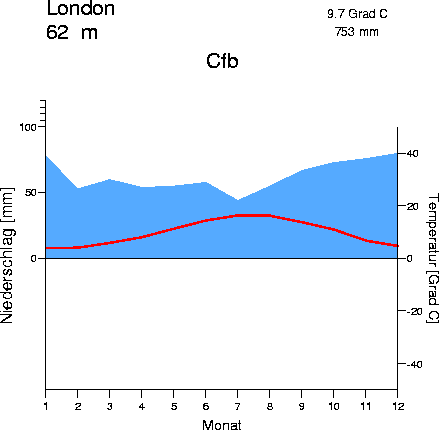
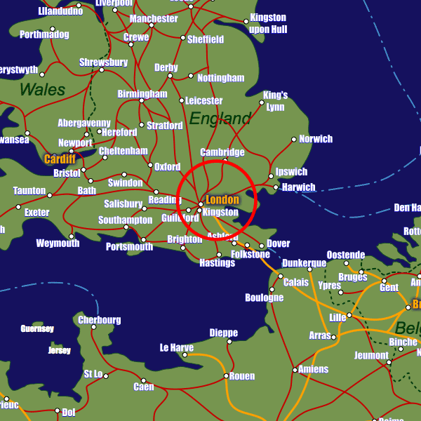
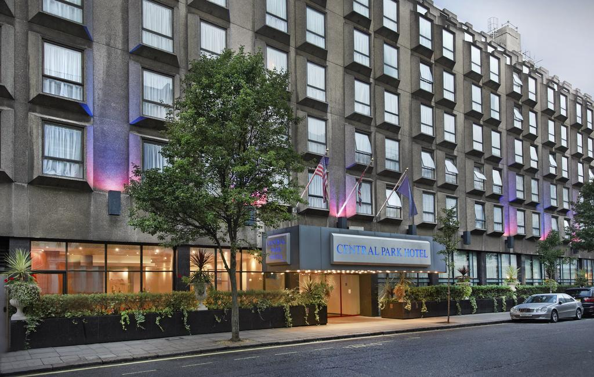
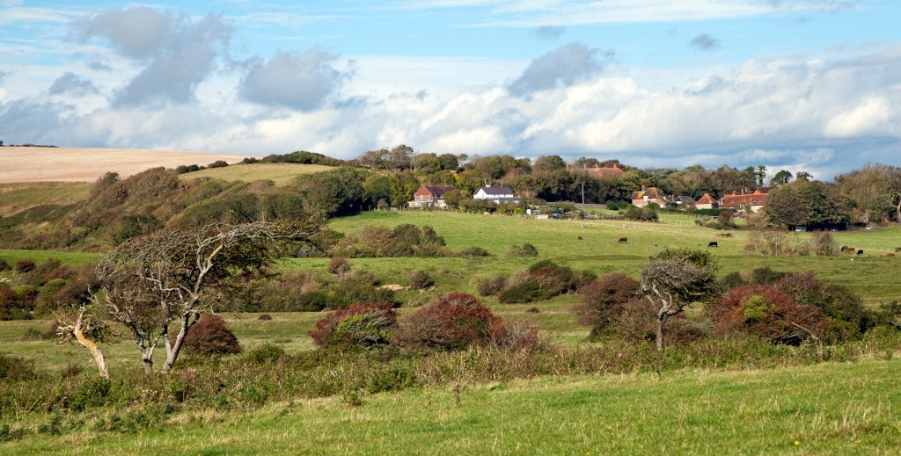

Wereldreis Klimaatgebeiden
(Aardrijkskunde PO)
Zeeklimaat
Na Boston gaan we naar Londen, Verenigd Koningrijk.
Klimaat & Klimaatgrafiek
In Londen is er een gematigd zeeklimaat. Dus de winters/zomers zijn niet echt extreem.

Een Klimaat grafiek van Londen
Ligging
Londen ligt in Engeland, Verenigd Koningrijk. Het duurt ongeveer 1uur en 15min van Amsterdam naar Londen.

Accomodatie
Central Park Hotel
De Central Park Hoten is een 3 sterren-hotel, dicht bij Hyde Park, in Londen. Het hotel zit ook heel dicht bij een subway station, zodat mensen makkelijk kunnen reizen.
Er is Wifi, Thee, Koffie en een Televisie in elke kamer.

Vegetatie
In Londen groeien er redelijk veel planten, omdat het niet te warm, maar ook niet te koud is. Er zijn veel heuvels, veel bomen en veel grasvelden.
